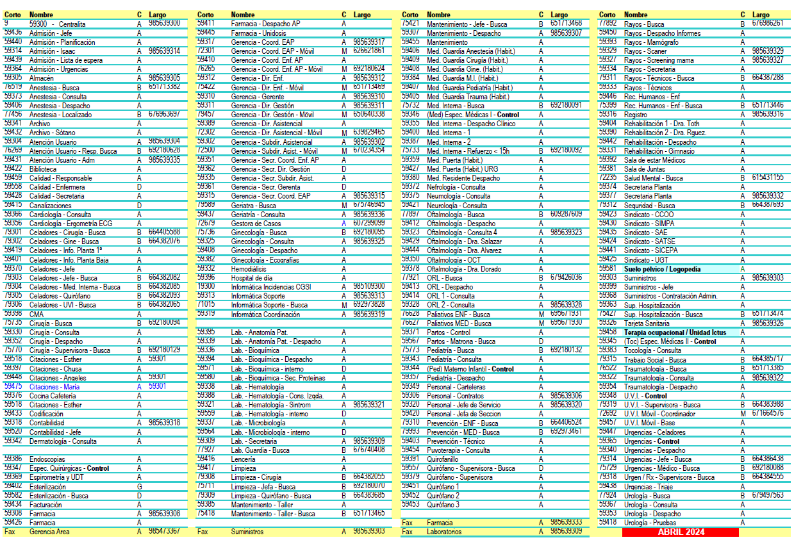
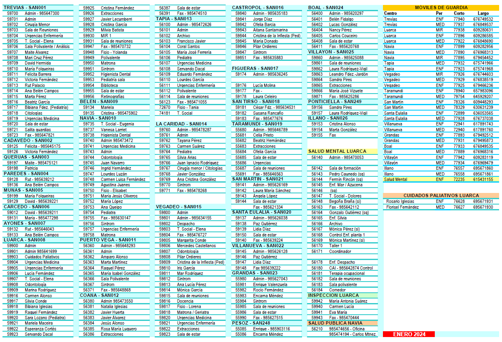
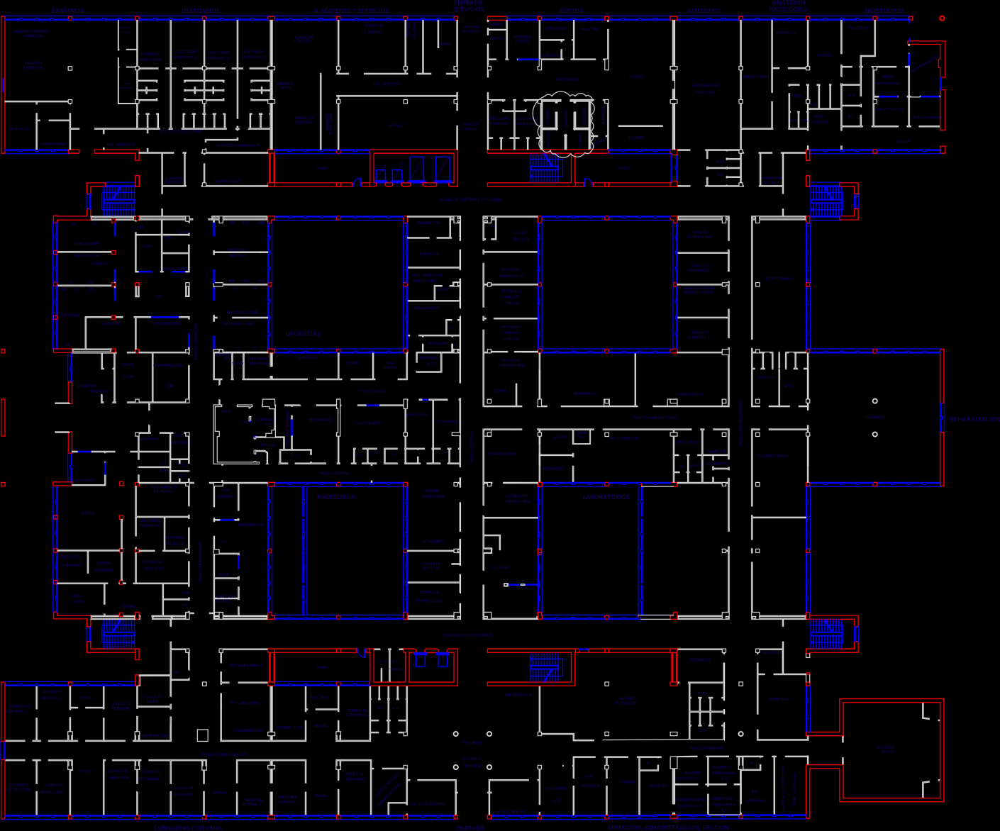
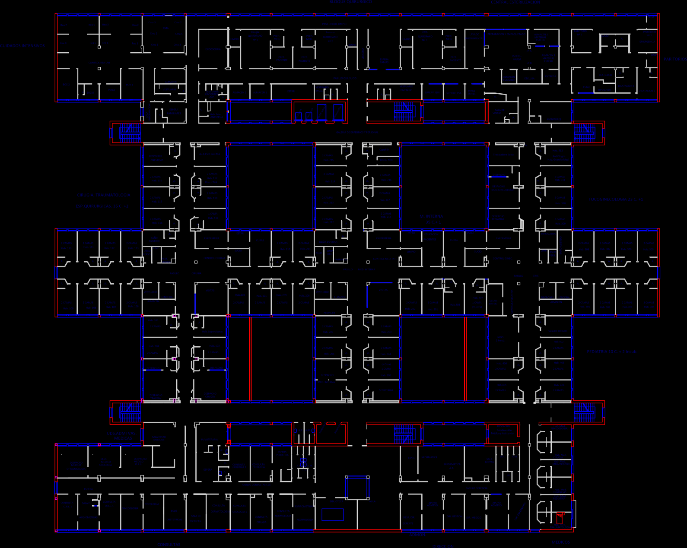

Anexos completos
Tablas de referencia íntegras: teléfonos, profesionales médicos y de enfermería, horarios, residencias, farmacias y planos del hospital.
Índice de anexos
Anexo I · Teléfonos de los centros de salud y correos electrónicos
Documento de referencia: Manual de acogida para profesionales de Atención Primaria del Área V del Principado de Asturias, ed01.
| Centro | Tfno. largo | Tfno. corto | Fax | |
|---|---|---|---|---|
| C.S. Trevías | 985 647 300 | 59701 | 985 647 821 | administracion.trevias@sespa.es |
| C.P. Cadavedo | 985 645 175 | |||
| C.P. Querúas | 985 475 121 | 985 475 121 | ||
| C.P. Paredes | 985 647 303 | 985 647 303 | ||
| C.P. Muñás | 985 477 315 | |||
| C.P. Carcedo | 985 477 298 | |||
| C.P. Ayones | 985 646 043 | |||
| C.S. Luarca | 985 641 699 | 59901 | 985 470 732 | administracion.luarca@sespa.es |
| C.P. Belén | 985 475 906 | |||
| C.S. Mental Luarca | 985 640 170 | 985 642 112 | ||
| Inspección Médica (lun-mié) | 985 641 437 | 985 470 444 | ||
| C.S. Navia | 985 473 099 | 59743 | 985 630 147 | administracion.navia@sespa.es |
| C.P. Coaña | 985 473 550 | 985 474 510 | administracion.coana@sespa.es | |
| C.P. Puerto Vega | 985 648 293 | 985 648 293 | administracion.pvega@sespa.es | |
| C.S. Tapia | 985 471 055 | 56101 | 985 471 055 | administracion.tapia@sespa.es |
| C.P. La Caridad | 985 478 268 | 59760 | 985 478 268 | administracion.caridad@sespa.es |
| C.S. Vegadeo | 985 634 167 | 59801 | 985 476 727 | administracion.vegadeo@sespa.es |
| C.P. Castropol | 985 635 183 | 59840 | 985 635 183 | administracion.castropol@sespa.es |
| C.P. Figueras | 985 636 245 | 59174 | 985 636 245 | administracion.figueras@sespa.es |
| C.P. San Tirso | 985 634 531 | |||
| C.L. Taramundi | 985 646 789 | 55680 | 985 646 789 | administracion.taramundi@sespa.es |
| C.L. San Martín | 985 626 169 | 59141 | 985 621 334 | administracion.oscos@sespa.es |
| C.L. Santa Eulalia | 985 626 038 | 59137 | 985 626 038 | |
| C.L. Villanueva | 985 626 128 | 59145 | 985 616 128 | |
| C.L. Grandas | 985 627 043 | 55980 | 985 627 043 | administracion.grandas@sespa.es |
| C.L. Pesoz | 985 627 095 | |||
| C.L. Boal | 985 620 297 | 56400 | 985 620 797 | administracion.boal@sespa.es |
| C.L. Villayón | 985 625 088 | 59860 | 985 625 088 | administracion.villayon@sespa.es |
| C.L. Ponticiella | 985 924 007 | |||
| C.L. Illano | 985 620 529 | 985 620 529 |
Anexo II · Profesionales médicos de Atención Primaria
Los nombres hacen referencia a los titulares e interinos y sustitutos de éstos.
| EAP | Médico de Familia / Pediatra | Centros y días de consulta |
|---|---|---|
| TREVÍAS | Felicita Barrera Fernández | Cadavedo (mar-jue) · Carcedo (mié) · Muñás (mar) |
| María Folgueiras Artime | Trevías (lun-jue-vie) | |
| Ruth Palacio González | Trevías (mar-jue-vie) · Paredes (mié) · Ayones (lun) | |
| Cruz Pérez Linares | Querúas (lun-jue) · Trevías (mar-mié-vie) | |
| Marta Pérez Quiroga | Trevías (lun-mar-mié-jue-vie) | |
| Patricia Lougedo Fueyo / María Bibiana Fernández Fernández (Pediatra) | Trevías | |
| LUARCA | Mariela Maceira Failache | Luarca · Belén |
| Carmen María Alonso Arruquero | Luarca | |
| Milvia Batista Aladro | Luarca | |
| Marina Rodríguez Rodríguez | Luarca | |
| Bibiana Iglesias Martínez | Luarca | |
| Lucas González García | Luarca | |
| Javier Lecumberri Muñoz | Luarca | |
| Florisel Fernández Lobato | Médico del Equipo de Apoyo de Cuidados Paliativos · Sara Lozano Losada (Pediatra) | |
| NAVIA | María Amparo Alonso García-Junceda | Puerto de Vega |
| Marta Martínez Ibán | Puerto de Vega | |
| Natalia Iglesias Fernández | Coaña | |
| Francisco Javier Huerta Díaz | Coaña | |
| Javier Álvarez López | Coaña | |
| Ingrid Hernández Lantigua | Navia | |
| Lourdes Luzán Fernández | Navia | |
| Carmen Luisa Fernández García / Juan José Navarro Campoamor | Navia | |
| Estefanía Vázquez Alonso / Natividad González Luis (Pediatra) | Navia | |
| TAPIA | Carmen Suárez López | La Caridad |
| Juan Ignacio Rodríguez-Arias Palomo | La Caridad | |
| Jenni Tayana Pérez Espitia | La Caridad | |
| María José Ferrería Villarinos | Tapia | |
| Francisco Javier Martínez Rodríguez / María del Coral Santos Rodríguez | Tapia | |
| Karín Magaly Palomino González (Pediatra) | Tapia (lun-mié-vie) · La Caridad (mar-jue) | |
| VEGADEO | César Fernández García | San Tirso de Abres |
| Lucía Molina Campos | Figueras | |
| Jorge Díaz Piñeiro / Ofelia Barcia Miranda | Castropol | |
| Vacante | Vegadeo | |
| Mercedes Castellanos Feito | Vegadeo | |
| Alejandra Langa Fernández / Mónica García García | Vegadeo | |
| Cristina de la Infiesta Álvarez (Pediatra) | Vegadeo (lun-mié-vie) · Castropol (martes) · Figueras (jueves) | |
| TARAMUNDI | Beatriz Hernández Villar | Taramundi |
| OSCOS | Lidia Díaz Rodríguez | Santa Eulalia (lun-mié-vie) · Villanueva (mar-jue) |
| Laura María Sánchez Rodríguez | San Martín | |
| GRANDAS | Enrique Valenzuela Martínez | Grandas · Pesoz (mar) |
| BOAL | Pilar Boto López | Boal |
| Ana María Pérez García | Boal | |
| ILLANO | Cristina Alonso Porcel | Illano |
| VILLAYÓN | Leandro Fernández-Jardón Méndez | Villayón |
| Laura Rodríguez-Vigil González-Torre | Villayón · Ponticiella (mié) |
Anexo III · Profesionales de Enfermería de Atención Primaria
SAC = Servicio de Atención Continuada. LG = Luarca.
| EAP | Enfermería | Centros y días de consulta |
|---|---|---|
| TREVÍAS | Ana Belén Campos Jaquete | Trevías (lun-mar-mié-jue-vie) |
| Lucía Iglesias de Amunategui | Trevías · Querúas (lun-jue) | |
| Julio César Álvarez Rodríguez | Trevías · Cadavedo (mar-jue) | |
| Beatriz García Alonso | Trevías (mar-jue-vie) · Paredes (mié) · Ayones (lun) | |
| David Hermida López | Trevías (lun-jue-vie) · Muñás (mar) · Carcedo (mié) | |
| Gema López Fernández / Julio M. González Bastida (SAC) | LG + Villayón + Illano | |
| LUARCA | María Esperanza Cortés Fernández | Luarca |
| Lucía Fernández García | Luarca | |
| Cristina Suárez Méndez | Luarca | |
| María Campos Rivero | Luarca | |
| Raquel Fernández Méndez | Luarca | |
| Cristina Fernández Cuesta | Luarca · Belén | |
| Patricia Pérez Pérez | Luarca | |
| Encarna Calvo Sariego | LG + Grandas + Illano | |
| Rosario Iglesias González (Paliativos) / Antonio Bazán Herrero (SAC) | Luarca | |
| NAVIA | María Isabel González Fernández | Puerto de Vega |
| Raquel Pérez Otero | Puerto de Vega | |
| José Jesús Alonso Lastra | Coaña | |
| Rosa María Luquero Pecharromán | Coaña | |
| Ana María Queipo Rodríguez | Navia | |
| María Jesús Oliveros Pérez | Navia | |
| Agustina Juanes González / María López Villar / Vanesa Larriet Lastra | Navia | |
| Cristina García Martínez / Mar Domínguez Blázquez (SAC) | LG + Boal + Illano | |
| TAPIA | Silvia Arias Barrientos | La Caridad |
| Ana Cristina González Fernández | La Caridad | |
| Javier González González | La Caridad | |
| Eduardo Fernández Fernández | Tapia | |
| Lourdes García Franco / Servando Dacal Rivas | Tapia | |
| Begoña Fernández Méndez / Rosa Cotarelo Fernández (SAC) | LG + Oscos | |
| VEGADEO | Susana Rancaño Freire | San Tirso de Abres |
| Laura Celerio Fernández | Figueras | |
| Aitana Santamarina Álvarez / Vacante | Castropol | |
| María Pilar Ordieres Tuero | Vegadeo · Castropol · Figueras | |
| Margarita Conde Bernardo / María Mar Rodríguez Rodríguez / Ana Lucía Pérez Rubio | Vegadeo | |
| Lucía Menéndez García / Alexandra Rodríguez Iglesias | LG + Taramundi + Illano | |
| Maite Álvarez Tuñón (SAC) | Vegadeo | |
| TARAMUNDI | Celia Prieto Cotarelo / Ofelia García Villamil | Taramundi |
| Sonia Álvarez López (SAC) | Taramundi | |
| OSCOS | María Paz Gutiérrez López | Santa Eulalia (lun-mié-vie) · Villanueva (mar-jue) |
| Ángela López González | San Martín de Oscos | |
| Marino Fuertes García (SAC) | Villanueva | |
| GRANDAS | Begoña Polo Pérez / Encarnación Méndez Castelao | Grandas · Pesoz (mar) |
| Débora Morán Ordoñez (SAC) | Grandas | |
| BOAL | Silvia Carbajales García / Silvia Conde Campos | Boal |
| Guillermo Fernández Llano (SAC) | Boal | |
| ILLANO | Reyes Winberg Nodal / SAC (10-13h) | Illano |
| VILLAYÓN | Rosa Pilar Álvarez García / María José Vizuete Iglesias | Villayón · Ponticiella (mié) |
| Iván Pillado Basanta (SAC) | Villayón | |
| SAC MIXTOS | Isabel González Fernández · Lucía González Méndez · Mónica Otero Torre | SAC MIX-1, MIX-2, MIX-3 |
Anexo IV · Otros profesionales de Atención Primaria: personal sanitario y no sanitario
| EAP | Profesional | Puesto | Teléfono |
|---|---|---|---|
| Trevías | Elena Badallo León | Trabajadora Social | 59705 |
| Sofía Parrondo Riesgo | Auxiliar Administrativo | 59701 | |
| María Florinda Castro Suárez | Auxiliar Administrativo | 59701 | |
| Luarca | Elena Badallo León | Trabajadora Social | 59907 |
| Yolanda Rodríguez Álvarez | Fisioterapeuta | 59948 | |
| Cristina García Fernández | Fisioterapeuta (Luarca-Navia) | ||
| Belén Sánchez-Ocaña Olay | Odontoestomatóloga (U. Salud Bucodental) | 59908 | |
| Mª Sol Vázquez Berdasco | Higienista Dental (U. Salud Bucodental) | 59952 | |
| María Teresa Roces Suárez | Auxiliar de Enfermería | 59901 | |
| José Carlos Fernández Méndez / Carmen Sofía Fernández Cordo | Auxiliar Administrativo | 59901 | |
| Javier Fernández Rodríguez | Celador | 59901 | |
| Navia | María Eugenia González López | Trabajadora Social | 59742 |
| Elisabet Martín Rodríguez | Fisioterapeuta | 59750 | |
| Encarnación Luisa Cerro Suárez | Auxiliar de Enfermería | 59743 | |
| Julia Pérez Pérez / Ángeles Regina García Méndez | Auxiliar Administrativo | 59743 | |
| Josefina F. Méndez Álvarez | Auxiliar Administrativo (Puerto de Vega) | 56360 | |
| María Teresa García García | Auxiliar Administrativo (Coaña) | 56380 | |
| Aurora Istillarte González | Celadora (Puerto de Vega) | 56360 | |
| Tapia | Dolores Osa Pérez / Amalia López Martínez | Auxiliar Administrativo | 56101 |
| Mª José Sagüillo López / Manuela Istillarte González | Auxiliar Administrativo (La Caridad) | 59760 | |
| Tania Castaño Suárez | Fisioterapeuta | 72760 | |
| Luján Blanco Couto | Fisioterapeuta (Tapia-Vegadeo) | ||
| Aranzazu Rodríguez Fernández | Auxiliar de Enfermería | 72760 | |
| Carmen Mª González Molero | Trabajadora Social | 74181 | |
| Vegadeo | Elena García González | Trabajadora Social | 59803 |
| Lorena Blanco Couto / Luján Blanco Couto | Fisioterapeuta | 59817 | |
| Beatriz Álvarez López | Odontoestomatóloga (U. Salud Bucodental) | 59807 | |
| Mª Jesús Diez Fernández | Higienista Dental (Vegadeo-Navia) | 59807 | |
| Ana María Méndez López | Auxiliar de Enfermería | 59801 | |
| María Mar Pérez Rubio | Administrativo | 59801 | |
| Taramundi | José Armando Uraín Sierra | Auxiliar Administrativo | |
| Amalia Motoso Fernández | Auxiliar Administrativo (Castropol) | 59840 | |
| Mirta González González / Montserrat García Arruñada | Auxiliar Administrativo (Figueras / propio) | 59174 / 55680 | |
| Oscos | Francisco Javier Madera Fernández | Aux. Administrativo (Sta. Eulalia-Villanueva) | 59137 / 59145 |
| Edita Álvarez Martínez | Auxiliar Administrativo (San Martín) | 59141 | |
| Grandas | Miriam Álvarez Martínez | Auxiliar Administrativo | 55980 |
| Boal | Mª Teresa Suárez Maseda | Auxiliar Administrativo | 56400 |
| Villayón | Nélida Méndez Rodríguez | Auxiliar Administrativo | 59860 |
Anexo V · Horarios de consultas, extracciones y Sintrom®
Las extracciones en Santa Eulalia y Villanueva de Oscos se hacen una semana en cada centro.
| EAP | Centro | Días consulta | Horario centro | Horario consulta | Extracciones (días) | Extracciones (hora) | Sintrom® (días) | Sintrom® (hora) |
|---|---|---|---|---|---|---|---|---|
| TREVÍAS | Trevías | Todos los días | 08:00-15:30 | 08:00-15:00 | Lun y Jue | 08:00 | Mar y Mié | 8:15-10:00 |
| Cadavedo | Martes | 08:00-15:30 | 08:00-15:00 | |||||
| Cadavedo | Jueves | 08:00-15:30 | 08:00-15:00 | |||||
| Querúas | Lunes | 08:00-15:30 | 08:00-15:00 | |||||
| Querúas | Jueves | 08:00-15:30 | 08:00-15:00 | |||||
| Paredes | Miércoles | 08:00-15:30 | 08:00-15:00 | |||||
| Muñás / Carcedo / Ayones | Mar / Mié / Lun | 08:00-15:30 | 08:00-15:00 | |||||
| LUARCA | Luarca | Todos los días | 08:00-15:30 | 08:00-15:00 | Lun-Mar-Jue | 08:00 | Lun-Jue-Vie | 8:15-10:00 |
| Belén | Lun-Mar-Mié-Jue | 12:45-13:30 | 12:45-13:30 | |||||
| Belén | Viernes | 10:15-11:25 | 10:15-11:25 | |||||
| NAVIA | Navia | Todos los días | 08:00-15:30 | 08:00-15:00 | Mar y Jue | 08:00 | Lun y Mié | 8:15-10:00 |
| Puerto de Vega | Todos los días | 08:00-15:30 | 08:00-15:00 | Lunes | 08:00 | Mar y Jue | 8:15-10:00 | |
| Coaña | Todos los días | 08:00-15:30 | 08:00-15:00 | Lun y Mié | 08:00 | |||
| TAPIA | Tapia | Todos los días | 08:00-15:30 | 08:00-15:00 | Mar y Vie | 08:00 | Lun y Jue | 8:15-10:00 |
| La Caridad | Todos los días | 08:00-15:30 | 08:00-15:00 | Mar y Jue | 08:00 | Mié y Vie | 8:15-10:00 | |
| VEGADEO | Vegadeo | Todos los días | 08:00-15:30 | 08:00-15:00 | Mar y Vie | 08:00 | Mar y Mié | 8:15-10:00 |
| Figueras | Todos los días | 08:00-15:30 | 08:00-15:00 | Miércoles | 08:00 | Viernes | ||
| Castropol / San Tirso | Todos los días | 08:00-15:30 / 10:00-13:20 | 08:00-15:00 | Miércoles | 08:00 | Viernes / Miércoles | ||
| TARAMUNDI | Taramundi | Todos los días | 08:00-15:30 | 08:00-15:00 | Jueves | 08:00 | Viernes | 8:15-10:00 |
| OSCOS | San Martín | Todos los días | 08:00-15:30 | 08:00-15:00 | Miércoles | 08:00 | Lunes | 8:15-10:00 |
| Santa Eulalia | Lun-Mié-Vie | 08:00-15:30 | 08:00-15:00 | Miércoles | 08:00 | Lunes | ||
| Villanueva | Mar-Jue | 08:00-15:30 | 08:00-15:00 | Miércoles | 08:00 | |||
| GRANDAS | Grandas | Todos los días | 08:00-15:30 | 08:00-15:00 | Miércoles | 08:00 | Jueves | 8:15-10:00 |
| Pesoz | Martes | 09:00-11:00 | 08:00-15:00 | |||||
| BOAL | Boal | Todos los días | 08:00-15:00 | 09:00-13:00 | Miércoles | 08:00 | Mar y Jue | 8:15-10:00 |
| VILLAYÓN | Villayón | Todos los días | 08:00-15:30 | 08:00-15:00 | Lunes | 08:00 | Jueves | 8:15-10:00 |
| Ponticiella | Miércoles | 11:30-15:00 | 11:30-15:00 | |||||
| ILLANO | Illano | Lun-Mar-Jue-Vie | 08:00-15:30 | 10:00-15:00 | Miércoles | 08:00 | Miércoles | 8:15-10:00 |
| Illano | Miércoles | 09:00-14:00 |
Anexo VI · Residencias de ancianos y centros de día
| Municipio | Residencia | Domicilio | Teléfonos |
|---|---|---|---|
| Valdés | Centro de Día. Personas Mayores | C/ Pilarín, s/n · 33700 Luarca | 985 640 486 |
| Valdés | Hospitalillo de Luarca (Privada) | Villar, s/n · 33700 Luarca | 985 470 707 · 636 410 337 |
| Valdés | Residencia Asilo de Luarca — ABHAL | Villar, s/n · 33700 Luarca | 985 642 617 |
| Valdés | Residencia Río Mayor | Otur, s/n · 33792 Valdés | 985 640 152 · 654 847 010 |
| Valdés | Residencia Bellavista (Privada) | Chano de Canero, s/n · 33789 Querúas | 985 475 108 · 620 909 507 |
| Navia | Centro de Día. Personas Mayores | Pedro Fernández Méndez, 1 · 33710 Navia | 985 474 329 · 985 474 123 |
| Navia | Residencia "San Francisco y Santa Rita" | C/ San Francisco, 61 · 33710 Navia | 985 630 170 |
| El Franco | Centro Rural de Apoyo Diurno (CRAD) | Principado, s/n · 33750 La Caridad | 985 478 728 |
| El Franco | Residencia geriátrica "Vega de Lleirá" | Arancedo, s/n · 33756 Arancedo | 985 637 907 · 661 322 343 |
| Tapia | Centro Rural de Apoyo Diurno (CRAD) | Gonzalo Méndez de Cancio, 7 · 33740 Tapia | 985 628 080 |
| Tapia | Residencia Villamil | Serantes, s/n · 33740 Tapia | 985 623 130 |
| Castropol | Centro Rural de Apoyo Diurno (CRAD) | Tol, s/n · 33794 Castropol | 985 635 387 |
| Vegadeo | Centro de Día. Personas Mayores | C/ Asturias, s/n · 33770 Vegadeo | 985 476 761 |
| Vegadeo | Residencia "La Milagrosa" (Privada-Patronato) | Avda. Milagrosa, 18 · 33770 Vegadeo | 985 634 052 |
| Taramundi | Residencia de Taramundi | Avda. Galicia, 15 · 33775 Taramundi | 985 646 709 |
| Santa Eulalia de Oscos | Residencia de Santa Eulalia de Oscos | Villabajo, 11 · 33776 Santa Eulalia | 985 626 412 |
| Villanueva de Oscos | Residencia de Ancianos | La Villa, s/n · 33777 Villanueva de Oscos | 985 621 319 |
| Grandas | Vivienda Tutelada Edad Dorada — Mensajeros de la Paz | El Cardo, s/n · Salime · 33730 Grandas | 985 627 222 · 637 990 821 |
| Boal | Residencia de personas mayores de Boal | C/ Alonso Rodríguez, s/n · 33720 Boal | 985 620 397 |
| Villayón | Centro Rural de Apoyo Diurno de Personas Mayores (CRAD) | El Ensanche, s/n · 33717 Villayón | 985 625 055 |
Anexo VII · Oficinas de farmacia
| Municipio | Titular | Dirección | Teléfono |
|---|---|---|---|
| Valdés | Sandra Costales Suárez | C/ Las Corradas, s/n · 33788 Cadavedo | 985 645 023 |
| Valdés | Elena Méndez-Bonito Méndez | Ctra. General, s/n · 33780 Trevías | 985 647 008 |
| Valdés | Alicia Fernanda Landeira Calviño | Ctra. S. Martín Luiña, s/n · 33784 Brieves | 985 647 384 |
| Valdés | Pablo Bermúdez Insúa | C/ Ramón Asenjo, 10 · 33700 Luarca | 985 640 071 |
| Valdés | Patricia Ferrán Mittelbrun | C/ Ramón Asenjo, 28 · 33700 Luarca | 985 640 073 |
| Valdés | Carmen Rodríguez Villa | C/ Párroco Camino, 9 · 33700 Luarca | 985 640 056 |
| Valdés | María García Ferreiro | Avda. Galicia, 26 · 33700 Luarca | 985 640 585 |
| Valdés | María Esther Gavilán Álvarez | C/ Párroco Penzol, s/n · 33790 Puerto de Vega | 985 648 001 |
| Navia | María Redondo Antuña | C/ Regueral, 14 · 33710 Navia | 985 630 101 |
| Navia | Silvia y Nuria Campoamor Suárez | Plaza Constitución, 8 · 33710 Navia | 985 630 067 |
| Navia | Alejandro Pérez Sela | C/ Campoamor, 12 · 33710 Navia | 985 630 197 |
| Navia | María Paz Méndez-Castrillón Rguez | C/ Regueral, 7 · 33710 Navia | 985 630 501 |
| Coaña | Ana Cabezudo Sánchez | Avda. El Espín, s/n · 33795 Coaña | 985 631 068 |
| Coaña | María Luz Méndez Álvarez | C/ Mohías, s/n · 33719 Coaña | 985 473 964 |
| El Franco | Alicia Martínez Menéndez | Travesía de Mohices, 3 · 33750 La Caridad | 985 637 405 |
| El Franco | María José García del Villar | C/ Párroco Rocha, 8 · 33750 La Caridad | 985 478 022 |
| Tapia de Casariego | Estíbaliz Peñaranda Retes | C/ Marqués de Casariego, 38 · 33740 Tapia | 985 628 065 |
| Tapia de Casariego | Ana Isabel Alonso García | C/ General Primo Rivera, 36 · 33740 Tapia | 985 472 858 |
| Castropol | María Antonia Cotallo Cortina | Plaza de Cruzadeiro, 2 · 33760 Castropol | 985 635 349 |
| Castropol | María del Carmen Guzmán Suárez | Avda. de Trenor, s/n · 33794 Figueras | 985 636 371 |
| Vegadeo | Herminia Díaz Martínez | Plaza del Ayuntamiento, 1 · 33770 Vegadeo | 985 634 013 |
| Vegadeo | Marina Díaz Martínez | C/ Empedrada, 3 · 33770 Vegadeo | 985 634 041 |
| San Tirso de Abres | Arturo Tuñón Rodríguez | Avda. de Galicia, 7 · 33774 San Tirso de Abres | 985 634 875 |
| Taramundi | Juan de la Cruz Antolín Rato | Avda. Galicia, 1 · 33775 Taramundi | 985 646 725 |
| San Martín de Oscos | Ana María Martínez Fernández | Carretera General, s/n · 33777 San Martín de Oscos | 985 626 029 |
| Santa Eulalia de Oscos | Miguel Santiago Pombo Rodríguez | La Plaza, s/n · 33776 Santa Eulalia de Oscos | 985 626 068 |
| Villanueva de Oscos | Ana María Martínez Concheso | La Plaza, s/n · 33777 Villanueva de Oscos | 985 621 277 |
| Grandas | Elisa Alonso Antón | C/ Pedro de Pedre, s/n · 33730 Grandas | 985 627 047 |
| Illano | Ana María Martínez Concheso | Illano, s/n · 33734 Illano | 985 621 277 |
| Boal | Cristina Mediavilla Bueno | C/ Melquiades Álvarez, s/n · 33720 Boal | 985 620 019 |
| Boal | María Aránzazu Suárez Fernández | C/ Everardo Villamil, s/n · 33720 Boal | 985 620 015 |
| Villayón | Marta Campoamor Suárez | La Plaza, 6 · 33717 Villayón | 985 625 056 |
Anexo VIII · Teléfonos Área Sanitaria (listado completo)
Directorio completo de extensiones telefónicas, reproducido directamente del documento original. Incluye teléfonos del Hospital de Jarrio y de todos los centros de Atención Primaria del Área, organizados por servicio/EAP.
Hospital de Jarrio

Atención Primaria

Fuente: Guía de Acogida Área I, Ed. 14 (imágenes originales del documento, actualizadas a enero de 2024).
Anexo X · Plano del hospital

Planta baja del Hospital de Jarrio

Planta primera del Hospital de Jarrio
Planos originales del documento (Anexo X). Si tu navegador no muestra bien el detalle, descarga el PDF original para verlos a resolución completa.
Tabla de versiones del documento
| Ed. | Fecha aprobación | Cambios relevantes | Autor |
|---|---|---|---|
| 01 | 04/2012 | 1ª edición | ELV |
| 02 | 05/2012 | 2ª ed. Ampliación de la información | ELV |
| 03 | 05/2013 | 3ª ed. Actualización de la información | SGP/ELV |
| 04 | 06/2014 | Actualización de la información | ELV |
| 05 | 06/2016 | Actualización de la información | BMP/TSM |
| 06 | 11/2017 | Actualización de la información | SGP/ASR |
| 07 | 04/2019 | Actualización de la información | SGP/ASR |
| 08 | 09/2020 | Actualización de la información | SGP/ASR |
| 09 | 07/2021 | Actualización de la información | SGP/ASR |
| 10 | 06/2022 | Actualización de la información | BMP/JMFC |
| 11 | 05/2023 | Actualización de la información | JFA/MSG |
| 12 | 10/2023 | Actualización de información y formato | JMFC/MSG |
| 13 | 04/2024 | Actualización de información | JMFC |
| 14 | 06/2025 | Actualización de información | JMFC |
Documento de referencia: Manual de acogida para profesionales de Atención Primaria del Área V del Principado de Asturias, ed01.